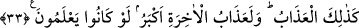

evimize bir misafir geldi, misafiri ağırlayacak hiçbir şeyimiz yoktu. Eşime: “Efendi, bu
gelen misafirdir, kendisine ikram etmemiz bize emrolunuyor. Bu koyunumuzu al da kes,
misafirimizi ağırlayalım” dedim. Ancak çocukların koyunun arkasından ağlayacağından
korktuğumuz için eşime, koyunu evden uzağa duvarın arkasına götürüp orada kesmesini
söyledim.
Eşim koyunu kesip kanını akıttığı sırada duvardan içeriye bir koyun sıçradı ve evin
içerisine girdi. Ben, koyunun eşimin elinden kurtulmuş olabileceğini düşündüm ve
korktum. Gerçek durumu gözlerimle görmek için dışarı çıktım. Bir de ne göreyim eşim
boğazlamış olduğu koyunun derisini yüzmekle meşgul idi. Ona, “efendi çok tuhaf bir şey
oldu” diyerek gördüklerimi anlattım. O, “herhalde Allah kestiğimiz koyunumuza bedel
olarak bize daha hayırlısını gönderdi” dedi. Bizim koyunumuzdan sâdece süt sağılırken,
misafire yaptığımız ikramın bir bereketi olarak bu yeni gelen koyundan hem süt ve hem
de bal sağılmaya başlandı.
Sâliha kadın bize bu hikâyeyi anlattıktan sonra bize şöyle seslendi: “Evlâdlarım,
bizim bu koyunumuz müridlerin kalbinde otluyor; onların kalpleri hoş olursa koyunun
sütü de hoş oluyor. Onların kalpleri değişirse koyunumuzun sütü de değişiyor. O hâlde
kalplerinizi hoş tutunuz.”
Yâfiî der ki: O sâliha kadın “müridler” kelimesiyle aslında kendini ve kocasını
kasdediyordu. Fakat kasdı özel olarak kendisi ve kocası olduğu hâlde kendilerini
gizlemek ve müridlerin kalplerini hoş tutmaya teşvik etmek için herkesi kasdediyormuş
havası veren genel bir lafız kullanmıştır. Çünkü kalplerin hoş tutulması ile nur, esrar,
yaşama lezzeti gibi sevilen her türlü hoşluk Melik ve Ğaffar olan Allah’ın yardımıyla
birlikte elde edilir. Buna göre burada verilmek istenen ana fikir şudur:
Eğer bizim kalbimiz temiz olursa kendi yanımızda mâlik olduğumuz şeyler de temiz
olur. Şu hâlde sizler kalbinizi temiz tutun ki sizin yanınızda bulunan şeyler de size temiz
olsun. Eğer gerçek böyle olmayıp tam tersine maksad bütün müridler olsaydı, sütün
hoşluğu diğer koyunlardan olmuş olurdu. Karı-koca olarak onların kalplerinin kötü
olması durumunda müridlerin kalplerinin temizliği onlara bir fayda vermez. Diğer
taraftan bu iki kişinin kalpleri temiz olduğunda ise diğer müridlerin kalplerinin pis
olması onlara bir zarar vermez.
33. İşte azap böyledir. Âhiret azâbı ise elbette daha büyüktür. Keşke bilselerdi!
“İşte azap böyledir.” Bu bir isim cümlesidir. Cümlede haber daha önce mübtedâ
daha sonra getirilerek bir kasr yapılmıştır. Azap kelimesinin başındaki elif-lam ahd
içindir. Yâni azap Mekkelilere ve bahçe sâhiplerine dünyada verdiğimiz bu azap
gibidir.